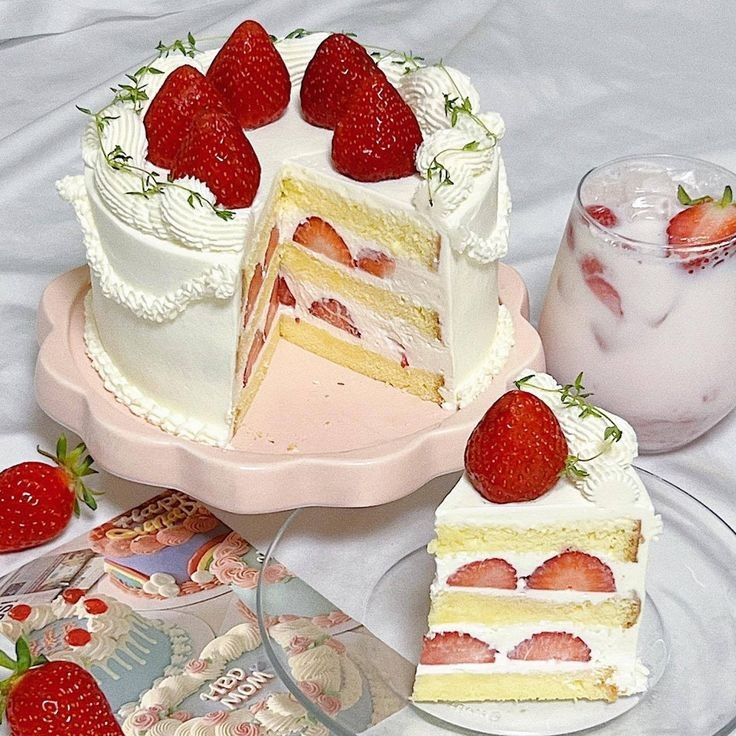

STRAWBERRY SHORTCAKE

INGREDIENTS
2 cups all-purpose flour, spooned and leveled
¾ cup medium-grind cornmeal
⅓ cup cane sugar
2½ teaspoons baking powder
¾ teaspoons sea salt
½ cup coconut oil, hardened and cut into small pieces, or cold butter, cubed
2 tablespoons lemon zest
2 tablespoons fresh lemon juice
2 large eggs, beaten
¼ cup milk, plus more for brushing
Coarse sugar, for sprinkling
3 cups fresh strawberries, hulled and sliced
2 cups whipped cream or coconut whipped cream
INSTRUCTIONS
-
In a medium bowl, whisk together the flour, cornmeal, sugar, baking powder, and salt.
-
Using your hands, work the coconut oil in until the mixture resembles coarse sand. Add the lemon zest, lemon juice, eggs, and milk and mix until just combined. The dough will be more moist and pliable than traditional biscuit dough.
-
Turn the dough out onto a lightly floured piece of parchment paper and pat into a ½-inch-thick rectangle. Fold the dough into thirds and pat or roll again until 1-inch thick. Freeze for 20 minutes.
-
Preheat the oven to 400°F and line a baking sheet with parchment paper.
-
Remove the dough from the freezer and use a 2½-inch round biscuit cutter to cut out 3 to 4 biscuits. Re-roll the scraps as necessary to cut out 8 1-inch-thick biscuits. Place the biscuits on the baking sheet.
-
Brush the tops of the biscuits with a little milk and sprinkle with coarse sugar.
-
Bake for 16 to 18 minutes, or until golden brown around the edges.
-
Allow the biscuits to cool slightly, then use a serrated knife to slice them in half horizontally. Assemble the strawberry shortcakes by filling the biscuits with the strawberries and cream.